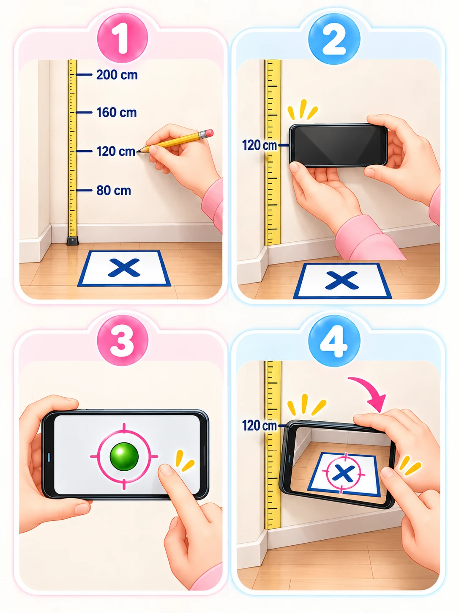

01 / PREPARE
Before measuring height,
set your reference points.
Prepare the marker size, the phone’s level origin and height calibration so that you can repeat measurements under the same conditions.
1. Prepare your space and equipment
- A flat, stable floor and a well-lit area without strong glare.
- Paper or a printed marker matching the type and size selected in Settings.
- A ruler or tape measure and a wall where you can mark known heights.
- A phone with camera permission enabled. For solo measurements, a remote control or another supported way to trigger a screen tap.
2. Select the paper or marker you will use
Open Settings icon → Settings → Measurement settings and select the paper and marker. A printed marker can help detection. Keep the sheet flat and free of creases.
Printing can change the marker’s size. When entering its actual size, measure the width between the center lines of the left and right black borders, and the height between the center lines of the top and bottom borders. Do not measure the whole sheet or the diagonal of the X. Enter values in the unit selected in the app: cm or in.
3. Save the phone bottom to camera lens distance
From the main screen, open Settings icon → Settings → Measurement calibration → Phone bottom to camera lens distance. Measure and save the distance on this phone before starting a reference measurement or an actual height measurement.
Identify the lens used for measurement
Select Turn on lens identification preview and cover each rear lens individually with a finger. The lens that obscures or darkens the image is the active lens. The preview uses the same default rear camera at 1× as height measurement. Do not assume the top lens is used when there are multiple lenses.
Align a ruler with the length of the phone
Place the phone with its back facing up. Align 0 mm with the bottom contact edge on the charging-port side. Read the ruler at the center height of the active lens. Measure along the phone’s length, rather than the camera bump’s height or a diagonal.
Enter the distance in mm and save
If you measure 15 cm, enter 150 and select Save. The allowed range is 10–300 mm. Use the actual distance on this phone, rather than its total length, the edge of its camera module or another device’s value. Select ? beside the setting to see the illustrated in-app guide.
Enter and save the setting above, then restart the reference or height measurement. Measure and save the distance again when changing phones or restoring settings from another device.
4. Set the level origin
Open Settings → Measurement calibration → Set level origin. Place the phone on a level surface, take your hands off and wait until calibration finishes. If the camera bump makes the phone tilt, use the edge of a desk or a similar support so that the phone’s body is level.
5. Measure reference points at known heights
Use a tape measure to mark accurate heights on a wall, measured from the floor. The default reference heights are 80, 120, 160 and 200 cm. You can adjust or add heights to match the range you will measure. These are example reference heights; use the units shown in your app when entering values.
Prepare a height mark and the marker position
Place the paper or marker on the floor directly below the height mark. Keep its position as close as possible to the position you will use for actual height measurements.
Start the measurement for that reference height
Position the underside of the phone—the point that will touch the head—at the marked height.
Level the phone and tap once
Bring the ball inside the center circle. Wait for the phone to settle, then tap the screen.
Keep the contact point fixed and aim at the marker
Tilt the phone until the paper or marker is centered in the crosshair circle, then tap again. A successful measurement returns you to the reference measurement screen.
Repeat at another height
At least two valid reference measurements at different heights are needed to use calibration.
Set the lowest reference at or below the minimum height you plan to measure, and the highest reference at or above the maximum. Errors may grow outside that range. Add reference points near the heights you measure most often.

6. Calibrate a marker placed in front of the feet
For Method 2, where the marker is placed a short distance in front of the feet, complete distant marker correction in Settings first. Follow the in-app guide using the distance and arrangement you will actually use. Keep those conditions consistent when measuring.
If you change phones or restore calibration settings from another device, measure and save its lens distance, set the level origin and repeat reference measurements.